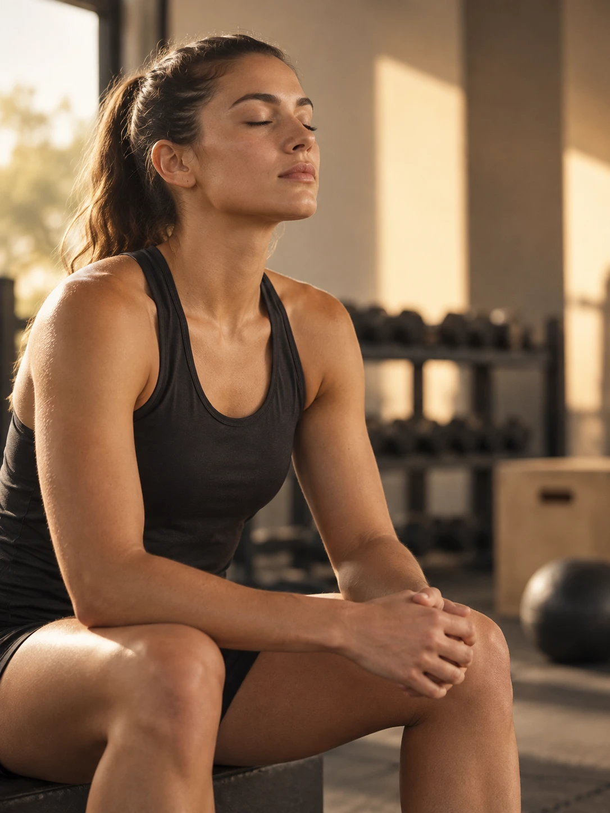
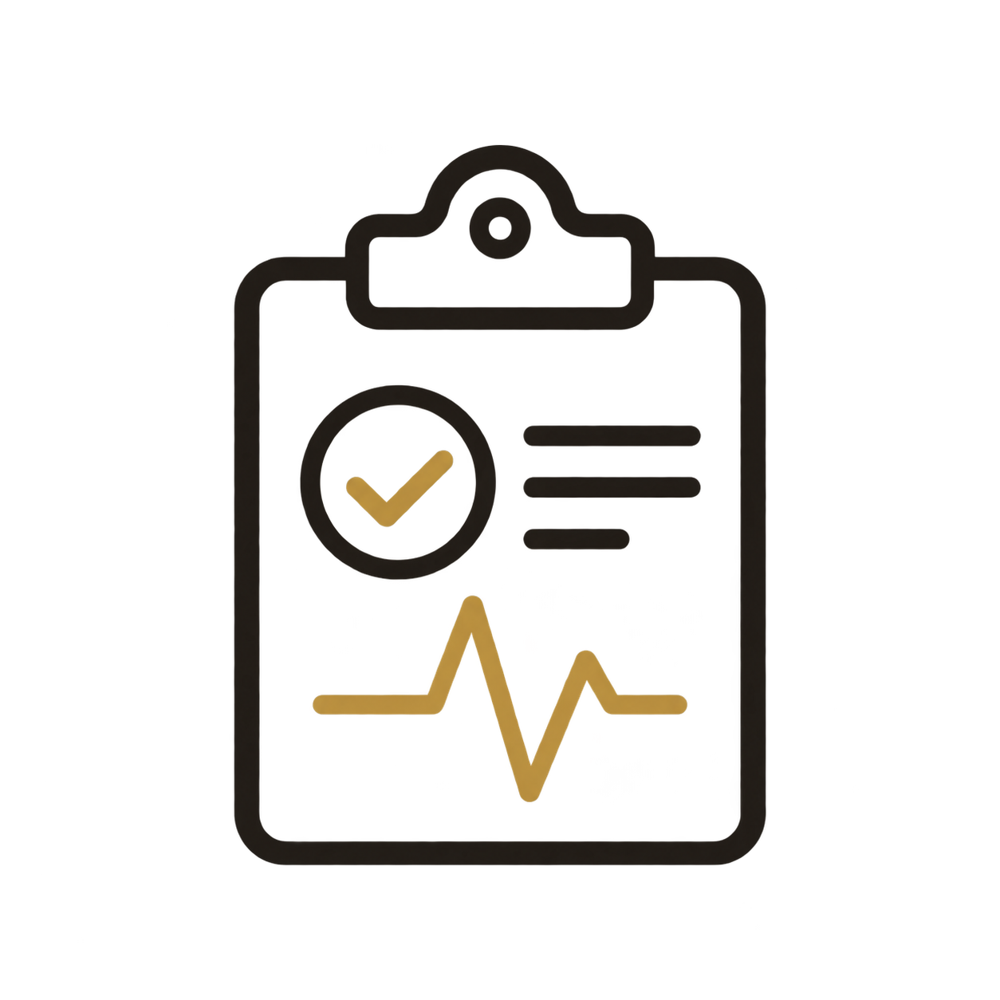
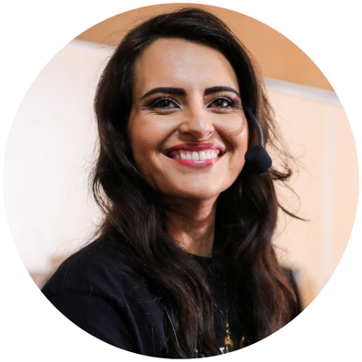
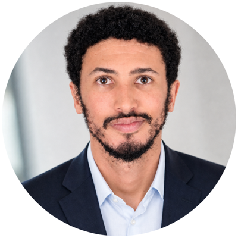
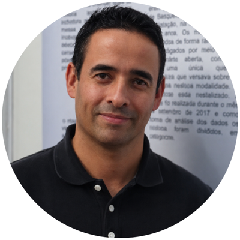
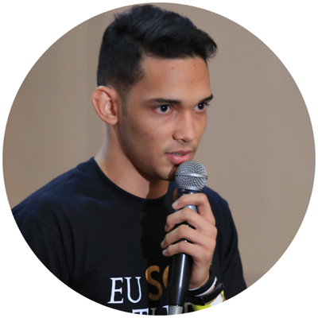

01
Fundamentos da Psicologia do Esporte
Bases teóricas que sustentam a atuação: motivação, ansiedade de competição, foco e regulação emocional no contexto esportivo.
Descubra os conhecimentos e ferramentas necessários para ajudar atletas e equipes a desenvolver confiança, controle emocional e desempenho — e veja como a formação prepara você para essa atuação.
Ao se cadastrar, você receberá a ementa completa da formação, com os módulos, temas e etapas desse percurso.
Boa parte dos profissionais chega até o esporte com boa vontade e pouca preparação específica. Faltam ferramentas para lidar com o que é único desse contexto.
Falta repertório específico para entender pressão, ansiedade de competição e rotina de treino de alto rendimento.
Sem uma linguagem comum com treinadores e comissão técnica, o trabalho psicológico fica isolado do plano de performance.
A formação generalista não entrega protocolos e instrumentos prontos para aplicar em atendimento com atletas.
Conhecimento técnico, ferramentas práticas e repertório para conversar com atletas, famílias e comissão técnica.
Bases teóricas que sustentam a atuação: motivação, ansiedade de competição, foco e regulação emocional no contexto esportivo.

Ferramentas para desenvolver confiança, controle emocional e consistência de desempenho em treino e competição.
Como se posicionar dentro da rotina de um clube ou equipe, dialogando com treinadores e demais profissionais.
Instrumentos de avaliação, planejamento de intervenção e acompanhamento de resultados ao longo da temporada.
Limites, responsabilidades e boas práticas para atuar com atletas, famílias e instituições esportivas.
Cada competência é desenvolvida em um módulo específico, do fundamento teórico até a prática de atendimento.
Histórico da área, principais teorias e o papel do psicólogo dentro do esporte de rendimento e de base.
Técnicas de regulação emocional, foco e confiança aplicadas à rotina de treino e competição.
Comunicação, posicionamento profissional e integração com o time multidisciplinar do esporte.

Instrumentos de avaliação e construção de plano de acompanhamento psicológico ao longo da temporada.
Consolidação do repertório e orientação para os primeiros passos da atuação profissional no esporte.
Esta é a estrutura geral — os módulos completos, cargas horárias e conteúdos programáticos estão na ementa.
Preencha seus dados e receba a ementa completa da pós em Psicologia do Esporte, com módulos, temas e etapas desse percurso.
Seus dados estão seguros e são usados apenas para enviar a ementa e informações sobre a formação.

Referência em treinamento mental desde 2016. Integra psicologia do esporte, neurociência e treinamento mental, e hoje alcança atletas, pais e profissionais de diferentes modalidades no Brasil e no exterior.
Um corpo docente que une neurociência, alto rendimento olímpico e experiência clínica com atletas.

Especialista em Neurociência e Treinamento Mental, formada nos EUA e com ampla experiência no desenvolvimento psicológico de atletas.

Traz para a formação a mentalidade dos maiores vencedores do esporte, com passagem por ciclos olímpicos.

Traz um olhar científico e clínico para o desempenho mental dos atletas.
Referência no estudo da performance esportiva, com especialização internacional.

Especialista em motivação e desenvolvimento de jovens atletas.

Atuação em marketing esportivo, posicionamento de marcas e estratégias de negócio no mercado do esporte.
Atuação em performance e desenvolvimento de atletas no cenário internacional.
Preparo, repertório e segurança para atuar na Psicologia do Esporte começam por entender exatamente o que essa formação vai desenvolver em você.
QUERO CONHECER O CAMINHO